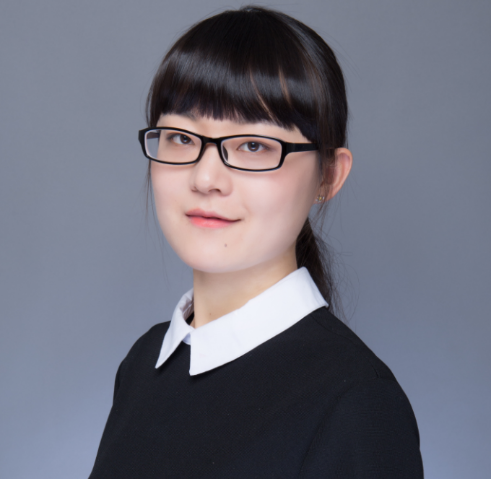

Mengying Zhao （赵梦莹）
|  | Associate Professor Email: zhaomengying at sdu dot edu dot cn |
Short Bio: Mengying Zhao received the BE degree from the School of Computer Science and Technology, Shandong University, China, in July 2011, and the PhD degree from the Department of Computer Science, City University of Hong Kong, in July 2015. She is now an associate professor with the School of Software, Shandong University. Her research interests include computer architecture, embedded system, and non-volatile memory.
Recent News
Our paper entitled “Pearl: Performance-Aware Wear Leveling for Non-volatile FPGAs” is accepted by IEEE Trans. on CAD of Integrated Circuits and Systems.
 Our paper entitled “Applying Multiple Level Cell to Non-volatile FPGAs” is accepted by ACM Trans. Embedded Comput. Syst..
Our paper entitled “Applying Multiple Level Cell to Non-volatile FPGAs” is accepted by ACM Trans. Embedded Comput. Syst..
- Our paper entitled “PattPIM: A Practical ReRAM-Based DNN Accelerator by Reusing Weight Pattern Repetitions” is accepted by DAC 2020.
- Our paper entitled “Q-learning Based Backup for Energy Harvesting Powered Embedded Systems” is accepted by DATE 2020.
- Our paper entitled “ResiRCA: A Resilient Energy Harvesting ReRAM Crossbar-Based Accelerator for Intelligent Embedded Processors” is accepted by HPCA 2020.
Selected Publications
Check my full publication list on dblp and google scholar.
Ke Liu, Mengying Zhao, Lei Ju, Zhiping Jia, Jingtong Hu, Chun Jason Xue, “Applying Multiple Level Cell to Non-volatile FPGAs”, ACM Trans. Embedded Comput. Syst. (TECS), accepted. [Full paper]
Wei Fan, Yujie Zhang, Weining Song, Mengying Zhao, Zhaoyan Shen, Zhiping Jia, “Q-learning Based Backup for Energy Harvesting Powered Embedded Systems”, 2020 Design, Automation & Test in Europe Conference & Exhibition (DATE), accepted. [Full paper]
Keni Qiu, Nicholas Jao, Mengying Zhao, Cyan Subhra Mishra, Gulsum Gudukbay, Sethu Jose, Jack Sampson, Mahmut Taylan Kandemir, Vijaykrishnan Narayanan, “ResiRCA: A Resilient Energy Harvesting ReRAM Crossbar-Based Accelerator for Intelligent Embedded Processors”, 2020 IEEE International Symposium on High Performance Computer Architecture (HPCA), accepted. [Full paper]
Weining Song, Yang Zhou, Mengying Zhao, Lei Ju, Chun Jason Xue, Zhiping Jia, “EMC: Energy-Aware Morphable Cache Design for Non-Volatile Processors”, IEEE Transactions on Computers (TC), accepted. [Full paper]
Shuo Huai, Weining Song, Mengying Zhao, Xiaojun Cai, Zhiping Jia, “Performance-aware Wear Leveling for Block RAM in Nonvolatile FPGAs”, 56th Annual Design Automation Conference 2019 (DAC), accepted. [Full paper]
Lei Ju, Xiaojin Sui, Shiqing Li, Mengying Zhao, Chun Jason Xue, Jingtong Hu, Zhiping Jia, “NVM-Based FPGA Block RAM With Adaptive SLC-MLC Conversion”, IEEE Transactions on Computer-Aided Design of Integrated Circuits and Systems (TCAD), accepted. [Full paper]
Mengying Zhao, Yuan Xue, Jingtong Hu, Chengmo Yang, Tiantian Liu, Zhiping Jia, Chun Jason Xue, “State Asymmetry Driven State Remapping in Phase Change Memory”, IEEE Transactions on Computer-Aided Design of Integrated Circuits and Systems (TCAD), accepted. [Full paper]
Mengying Zhao, Chenchen Fu, Zewei Li, Qing'an Li, Mimi Xie, Yongpan Liu, Jingtong Hu, Zhiping Jia, Chun Jason Xue, “Stack-Size Sensitive On-Chip Memory Backup for Self-Powered Nonvolatile Processors”. IEEE Transactions on Computer-Aided Design of Integrated Circuits and Systems (TCAD), accepted. [Full paper]
Jing Li, Mengying Zhao, Lei Ju, Chun Jason Xue, Zhiping Jia, “Maximizing Forward Progress with Cache-aware Backup for Self-powered Non-volatile Processors”, The 54th Annual Design Automation Conference 2017 (DAC), accepted. [Full paper]
Ke Liu, Mengying Zhao, Lei Ju, Zhiping Jia, Chun Jason Xue, Jingtong Hu, “Design Exploration for Multiple Level Cell Based Non-Volatile FPGAs”, 2017 IEEE International Conference on Computer Design (ICCD), accepted. [Full paper]
Qian Lou, Mengying Zhao, Lei Ju, Chun Jason Xue, Jingtong Hu, Zhiping Jia, “Runtime and reconfiguration dual-aware placement for SRAM-NVM hybrid FPGAs”, 2017 IEEE 6th Non-Volatile Memory Systems and Applications Symposium (NVMSA), accepted. [Full paper]
Yang Zhou, Mengying Zhao, Lei Ju, Chun Jason Xue, Xin Li, Zhiping Jia, “Energy-aware morphable cache management for self-powered non-volatile processors.”, 2017 IEEE 23rd International Conference on Embedded and Real-Time Computing Systems and Applications (RTCSA), accepted. [Full paper]
Mengying Zhao, Keni Qiu, Yuan Xie, Jingtong Hu, Chun Jason Xue, “Redesigning software and systems for non-volatile processors on self-powered devices”, 2016 IFIP/IEEE International Conference on Very Large Scale Integration (VLSI-SoC), accepted. [Full paper]
Mengying Zhao, Lei Jiang, Liang Shi, Youtao Zhang, Chun Jason Xue, “Wear Relief for High-Density Phase Change Memory Through Cell Morphing Considering Process Variation.”, IEEE Transactions on Computer-Aided Design of Integrated Circuits and Systems (TCAD), accepted. [Full paper]
Mengying Zhao, Alex Orailoglu, Chun Jason Xue, “Joint Profit and Process Variation Aware High Level Synthesis With Speed Binning.”, IEEE Transactions on Very Large Scale Integration (VLSI) Systems, accepted. [Full paper]
Mengying Zhao, Yuan Xue, Chengmo Yang, Chun Jason Xue, “Minimizing MLC PCM write energy for free through profiling-based state remapping.”, The 20th Asia and South Pacific Design Automation Conference (ASP-DAC), accepted. [Full paper]
Qing'an Li, Mengying Zhao, Jingtong Hu, Yongpan Liu, Yanxiang He, Chun Jason Xue, “Compiler directed automatic stack trimming for efficient non-volatile processors.”, 2015 52nd ACM/EDAC/IEEE Design Automation Conference (DAC), accepted. [Full paper]
Mimi Xie, Mengying Zhao, Chen Pan, Jingtong Hu, Yongpan Liu, Chun Jason Xue, “Fixing the broken time machine: consistency-aware checkpointing for energy harvesting powered non-volatile processor.”, 2015 52nd ACM/EDAC/IEEE Design Automation Conference (DAC), accepted. [Full paper]
Mengying Zhao, Qing'an Li, Mimi Xie, Yongpan Liu, Jingtong Hu, Chun Jason Xue, “Software assisted non-volatile register reduction for energy harvesting based cyber-physical system.”, 2015 Design, Automation & Test in Europe Conference & Exhibition (DATE), accepted. [Full paper]
Mengying Zhao, Liang Shi, Chengmo Yang, Chun Jason Xue, “Leveling to the last mile: Near-zero-cost bit level wear leveling for PCM-based main memory.”, 2014 IEEE 32nd International Conference on Computer Design (ICCD), accepted. [Full paper]
Mengying Zhao, Hao Zhang, Xiang Chen, Yiran Chen, Chun Jason Xue, “Online OLED dynamic voltage scaling for video streaming applications on mobile devices.”, 2013 International Conference on Hardware/Software Codesign and System Synthesis (CODES+ISSS), accepted. [Full paper]
Mengying Zhao, Alex Orailoglu, Chun Jason Xue, “Profit maximization through process variation aware high level synthesis with speed binning.”, 2013 Design, Automation & Test in Europe Conference & Exhibition (DATE), accepted. [Full paper]
Awards
Third Place, International Hardware Design Contest 2017, Design Automation Conference.
Services
TPC member of DATE 2021, ACM SAC 2021, DAC 2019, ASPDAC 2019.
Reviewer of TC, TCAD, TVLSI, TECS, TODAES, JSA.
Last update: 8/20/2020